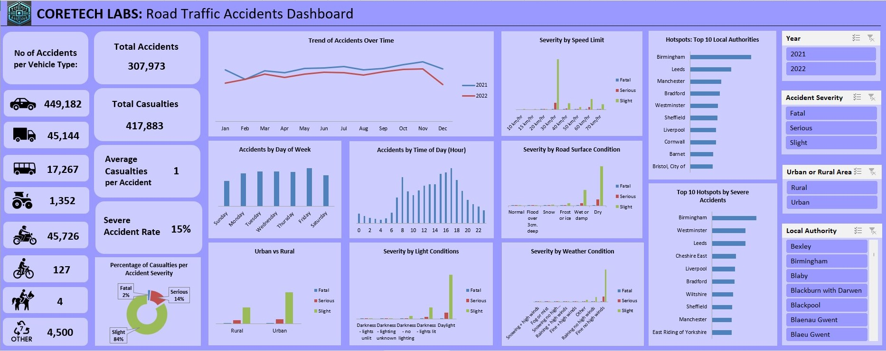

Structured Analysis
I build from clean data toward reliable trends, practical KPIs, and digestible insights.
Public Health Researcher • Data Analytics Professional
I work at the intersection of health, analytics, and decision-making, using research and applied data analysis to uncover patterns, communicate insight, and support practical action.
About Me
I am a public health researcher and data analytics professional with experience in public health research, policy support, stakeholder engagement, and applied analytics.
My interests sit in health analytics, public health analytics, evaluation, reporting, and broader analyst roles where data can be translated into meaningful action. I am especially interested in building work that connects clear analysis with practical decision support.
What I bring to a project
Featured Project
An end-to-end Excel project focused on transforming raw accident records into a decision-ready dashboard with actionable safety insights.

Project Snapshot
This analysis explores accident frequency, severity, road conditions, lighting, geography, and other risk factors to support clearer road safety planning and targeted intervention.
Tools Used
What the work demonstrates
Strengths
I build from clean data toward reliable trends, practical KPIs, and digestible insights.
I care about making analysis understandable, useful, and relevant to real-world decisions.
My background in public health helps me frame data work around people, systems, and impact.
Current Direction
I am intentionally building a smaller portfolio that reflects completed, end-to-end work. As more projects are finalized, this site will continue to grow, but for now the focus is quality, clarity, and showing how I think through an analytics problem from start to finish.
Contact
Explore the project on GitHub and follow along as I continue building my analytics portfolio.